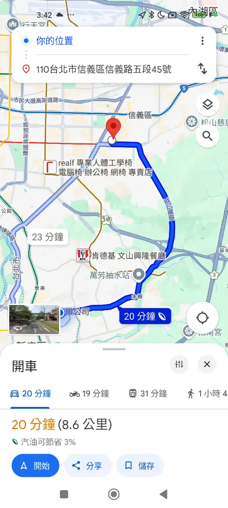
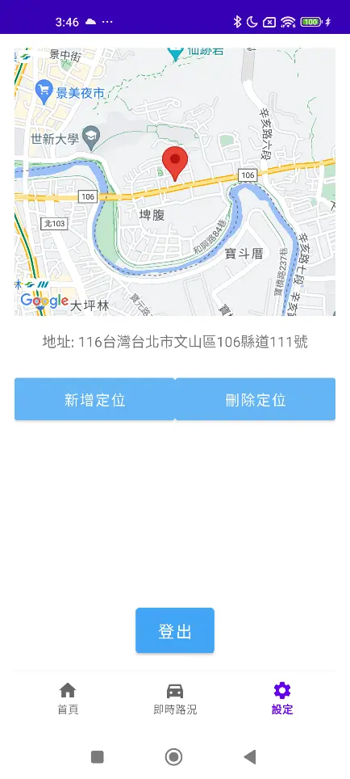

登入，開始使用
從同一個入口使用行車功能
01 — AI 行車助手
帶領五人團隊，將停車、導航與路況整合到一個 Android App
從同一個入口使用行車功能
串接 TDX 停車資料，查看指定區域的停車資訊
接上 Google Maps，規劃前往目的地的路線

結合 TDX 路況影像與 ResNet-18 車流分類
記錄停車位置，回程時再找回車子

Login往下滑動 / 實際 App 畫面
API 串接、模型訓練與整合過程
看行車助手完整案例02 — 真實客戶網站
/ 02 / ©03 — 聯絡
想找我合作，或聊聊 AI 應用與網頁產品，歡迎聯絡